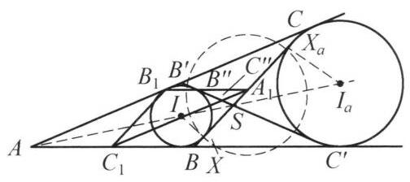

102 例 7：费尔巴哈定理（九点圆与内切圆切点反演）
102.1 题目
(费尔巴哈定理)证明: 任意一个三角形的九点圆与其内切圆和三个旁切圆都相切.
102.2 参考解答
如图 7-6,设 {A}_1,{B}_1,{C}_1 分别是 \triangle {ABC} 三边的中点 (其外接圆就是九点圆), I 为 \triangle {ABC} 的内心, {I}_a 为它的第一个旁切圆, X,{X}_a 分别是圆 I 与圆 {I}_a 与 {BC} 边的切点, {B}^{\prime }{C}^{\prime } 为这两个圆的另一条内公切线, {B}^{\prime },{C}^{\prime } 分别在 {AC},{AB} 上, {BC} 与 {B}^{\prime }{C}^{\prime } 交于点 S ,则 A , I, S,{I}_a 四点共线. 记 {B}^{\prime }{C}^{\prime } 与 {A}_1{B}_1,{A}_1{C}_1 的交点为 {B}^{\prime \prime },{C}^{\prime \prime } .

图 7-6
以 {A}_1 为反演中心,记 \triangle {ABC} 的三边长为 a, b, c, p = \frac{1}{2}\left( {a + b + c}\right) ,则易知 {BX} = C{X}_a = p - b ，于是 {A}_1 也是 X{X}_a 的中点. 这样，以 \frac{1}{2}X{X}_a 为反演半径作反演变换后，有以下结论.
- X{X}_a = a - 2\left( {p - b}\right) = b - c (不妨设 b - c > 0 ，否则重新标记顶点 A, B ， C) ，故反演半径为 \frac{1}{2}\left( {b - c}\right) .
(2)九点圆过点 {A}_1 ，故其反演像为一条直线. 进一步，我们证明 {B}_1,{C}_1 的反演像为 {B}^{\prime \prime },{C}^{\prime \prime } .
事实上,由角平分线定理知 {SC} = \frac{ab}{b + c},{SB} = \frac{ac}{b + c} ,于是
S{A}_1 = \frac{1}{2}\left( {{SC} - {SB}}\right) = \frac{a\left( {b - c}\right) }{2\left( {b + c}\right) }.
另外,
B{C}^{\prime } = A{C}^{\prime } - {AB} = {AC} - {AB} = b - c,
同理 C{B}^{\prime } = b - c . 从而,利用 \triangle S{A}_1{B}^{\prime \prime } \backsim \triangle {SB}{C}^{\prime } 及 \triangle S{A}_1{C}^{\prime \prime } \backsim \triangle {SC}{B}^{\prime } , 可知
\frac{{A}_1{B}^{\prime \prime }}{b - c} = \frac{{A}_1{B}^{\prime \prime }}{B{C}^{\prime }} = \frac{S{A}_1}{SB} = \frac{b - c}{2c},
\frac{{A}_1{C}^{\prime \prime }}{b - c} = \frac{{A}_1{C}^{\prime \prime }}{C{B}^{\prime }} = \frac{S{A}_1}{SC} = \frac{b - c}{2b}.
从而
{A}_1{B}^{\prime \prime } \cdot {A}_1{B}_1 = \frac{c}{2} \cdot \frac{{\left( b - c\right) }^2}{2c} = {\left( \frac{b - c}{2}\right) }^2,
{A}_1{C}^{\prime \prime } \cdot {A}_1{C}_1 = \frac{b}{2} \cdot \frac{{\left( b - c\right) }^2}{2b} = {\left( \frac{b - c}{2}\right) }^{2}.
所以 {B}_1,{C}_1 的反演像为 {B}^{\prime \prime },{C}^{\prime \prime } .
这一结论表明: 九点圆的像为通过 {B}^{\prime \prime },{C}^{\prime \prime } 的直线.
(3)由于 {A}_{1}X 为圆 I 的切线(段)，故圆 I 的反演像是其自身，同理圆 {I}_a 的反演像也是其自身.
鉴于 {B}^{\prime }{C}^{\prime } 为圆 I 与圆 {I}_a 的公切线，而它又是九点圆的反演像，所以，九点圆与圆 I 和圆 {I}_a 相切. 同理可证:九点圆与另外两个旁切圆相切. 定理获证.
102.3 解题思路与分析
这个证明之所以让人觉得“费解”，是因为教材采用了“综合法”（正推）的书写方式：作者一上来就把辅助线 B'C'、交点 S, B'', C'' 以及反演半径 \frac{1}{2}(b-c) 像变魔术一样直接抛出来，然后通过一通代数计算宣布“刚好相等，证毕”。这种写法完全掩盖了发现这个证明时的“分析法”（逆向思维）过程。
如果我们顺着发现者的真实思考路径倒推回去，你会发现这里的每一步选择几乎都是唯一且必然的；甚至书中第 (2) 步繁琐的边长计算，在几何本质上也是完全可以避免的。
102.3.1 第一步：为什么想到用反演？又为什么偏偏选 A_1 作反演中心？
目标：证明九点圆同时与内切圆 \odot I 和旁切圆 \odot I_a 相切。 如果直接用圆心距等于半径之和/差（d = R \pm r）去算，会陷入极其惨烈的三角恒等式或代数暴算。而在处理“多圆相切”问题时，反演变换是最强大的降维工具，因为它既保持相切关系，又能把圆拉直成直线。
那么，怎样选反演中心 O 和反演半径 R 最划算？最理想的情况需要同时满足两个愿望： 1. 把九点圆变成一条直线：这要求反演中心 O 必须选在九点圆上。九点圆上我们最熟悉的点，就是三边中点 A_1, B_1, C_1 和三个垂足 H_a, H_b, H_c。 2. 让内切圆 \odot I 和旁切圆 \odot I_a 在反演下都“原地不动”（即反演像是它们自身）： * 一个圆在反演下保持不变的充要条件是：它与反演圆正交，即反演中心 O 到该圆的切线长恰好等于反演半径 R（R^2 = \text{Pow}(O, \odot)）。 * 要想让 \odot I 和 \odot I_a 同时在同一个反演下保持不变，反演中心 O 到这两个圆的切线长必须相等！也就是说，O 必须落在这两个圆的根轴（等幂轴）上。
现在把这两个愿望合在一起看：在 BC 边上，由于 BC 与 \odot I, \odot I_a 分别切于 X, X_a，BC 上到两圆切线长相等的点，显然就是线段 XX_a 的中点。 而由三角形内切圆与旁切圆的经典切点性质（BX = CX_a = p - b），XX_a 的中点恰好就是 BC 边的中点 A_1！
核心破局点：中点 A_1 迎来了一个几何奇迹——它既在九点圆上，又在 \odot I 与 \odot I_a 的根轴上！ 因此，以 A_1 为反演中心、以切线长 A_1X = A_1X_a = \frac{1}{2}|b-c| 为反演半径作反演，根本不是凑出来的巧合，而是为了同时实现“拉直九点圆”与“固定内切圆、旁切圆”的唯一必然选择。
102.3.2 第二步：为什么一上来就凭空画出另一条内公切线 B'C'？
一旦确定了以 (A_1, A_1X) 进行反演，三个圆的命运就已经注定了： * \odot I 的反演像是它自己 \odot I； * \odot I_a 的反演像是它自己 \odot I_a； * 九点圆过反演中心 A_1，所以它的反演像必然是一条直线 \ell。
由于反演变换保持相切关系，原命题“九点圆与 \odot I, \odot I_a 都相切”，在反演后就等价于： “直线 \ell 与 \odot I, \odot I_a 都相切”——即直线 \ell 必须是 \odot I 与 \odot I_a 的一条公切线！
可是，两个相离的圆 \odot I 和 \odot I_a 总共只有 4 条公切线： * 两条外公切线：AB 和 AC； * 两条内公切线：BC 和另一条内公切线 B'C'。
九点圆的反演像 \ell 会是哪一条呢？显然不可能是过反演中心的 BC，从图形位置看也不可能是 AB 或 AC。所以，如果费尔巴哈定理是对的，九点圆反演出来的那条直线 \ell 除了是第四条公切线 B'C' 之外，别无可能！
这就是为什么作者在证明的第一段就急匆匆地把另一条内公切线 B'C' 画出来——因为那是他通过逆向分析早就看穿的“终点靶心”。
102.3.3 第三步：书中第 (2) 步的 B'', C'' 和边长计算是怎么想出来的？
既然已经猜到了“九点圆的反演像必然是直线 B'C'”，接下来只需要写一段严谨的证明去确认它。
教材作者采取的是最朴素的“代点验证法”： 1. 九点圆是由 A_1, B_1, C_1 三点决定的外接圆，因此它的反演像直线 \ell 由 B_1, C_1 的反演像 B_1^*, C_1^* 决定。 2. 根据反演的定义，B_1^* 一定在射线 A_1 B_1 上。如果反演像直线真的就是 B'C'，那么 B_1^* 必须同时在直线 B'C' 上——也就是说，B_1^* 只能是 A_1 B_1 与 B'C' 的交点 B''！同理，C_1^* 只能是交点 C''。 3. 于是问题转化为纯计算验证：只要算出 A_1 B_1 \cdot A_1 B'' 恰好等于反演半径的平方 \left(\frac{b-c}{2}\right)^2，就能宣布 B'' 确实是 B_1 的反演点。 4. 至于怎么算 A_1 B''：因为 A_1 B_1 \parallel AB（中位线），图中天然存在字形相似 \triangle SA_1 B'' \sim \triangle SBC'；而 S, B', C' 的位置全由内角平分线 AI I_a 的对称性控制（B'C' 与 BC 关于角平分线 AS 对称，故 AB' = AB = c \implies CB' = b-c，且 S 为 \angle A 的内角平分线与 BC 的交点）。顺着相似比算下来，自然水到渠成。
102.3.4 第四步：降维视角——如何不写一行代数计算，一眼看穿第 (2) 步？
如果你觉得第 (2) 步借助 B'', C'' 算边长还是过于“匠气”，我们可以用反平行（Antiparallel）与调和点列（Harmonic Bundle）的几何性质，实现真正的“零计算”秒杀。
要证明九点圆的反演像直线 \ell 就是 B'C'，我们只需要确定两件事：直线 \ell 的方向，以及直线 \ell 上的一个定点。
- 看方向（天然平行于 B'C'）：
- 九点圆是 \triangle A_1 B_1 C_1 的外接圆。在以顶点 A_1 为中心的任意反演变换下（无论反演半径是多少），由于 A_1 B_1 \cdot A_1 B_1^* = A_1 C_1 \cdot A_1 C_1^*，必有 \triangle A_1 B_1^* C_1^* \sim \triangle A_1 C_1 B_1（反向相似）。
- 这意味着，反演像直线 \ell（即 B_1^* C_1^*）与直线 B_1 C_1 关于 \angle B_1 A_1 C_1 的角平分线是对称（反平行）的。
- 注意到中位线 A_1 B_1 \parallel AB，A_1 C_1 \parallel AC，B_1 C_1 \parallel BC，所以把 B_1 C_1 关于 \angle B_1 A_1 C_1 的平分线作对称，其方向等价于把 BC 关于 \angle A 的平分线 AS 作对称。
- 而内切圆与旁切圆本身关于角平分线 AS 对称，它们的两条内公切线 BC 与 B'C' 必然也关于 AS 对称！
- 结论：无论反演半径取多少，九点圆关于 A_1 的反演像直线 \ell，在方向上天然就平行于 B'C'！
- 看定点（垂足 H_a 直接反演到交点 S）：
- 既然方向已经平行于 B'C'，我们只需要说明 \ell 经过 B'C' 与 BC 的交点 S 即可。
- 在直线 BC 上，九点圆除了经过中点 A_1，还经过 A 点的高线垂足 H_a！如果 \ell 经过点 S，那么 S 就必须是垂足 H_a 的反演像。
- 为什么 H_a 和 S 互为反演点？看角平分线 AS（其上有 A, I, S, I_a 四点共线）：在 \triangle ABS 中，BI 和 BI_a 分别是 \angle B 的内、外角平分线，因此直线 AS 上的四个点构成经典的调和点列： (A, S; I, I_a) = -1
- 现在，将直线 AS 上的这四个点向 BC 边作正交投影（垂线）：
- A 的投影是高线垂足 H_a；
- S 本身就在 BC 上，投影是 S；
- I 和 I_a 的投影恰好就是切点 X 和 X_a！
- 因为平行投影保持交比不变，所以 BC 上的这四个点也是调和点列： (H_a, S; X, X_a) = -1
- 又因为 A_1 是 XX_a 的中点，由调和点列的牛顿公式（Newton’s Relation）立刻得到： A_1 H_a \cdot A_1 S = A_1 X^2 = R^2
这说明九点圆上的垂足 H_a 在反演下直接映到了点 S！一条直线既过点 S，方向又与 B'C' 平行，它就只能是公切线 B'C' 本身。从这个视角回看教材的证明，第 (2) 步的计算其实就是把这段射影与反平行性质用初中相似三角形的语言“翻译”了一遍。
102.4 分步证明
102.4.1 步骤 0：构型引入：九点圆、内切圆与旁切圆
在任意不等边锐角 \triangle ABC 中，记三边中点为 A₁, B₁, C₁，其外接圆即为三角形的九点圆（圆心为 N）。 \triangle ABC 的内心为 I，内切圆切边 BC 于点 X；顶点 A 对应的旁切圆心为 Iₐ，切边 BC 于点 Xₐ。 费尔巴哈定理断言：九点圆与内切圆及三个旁切圆都相切。我们将以底边中点 A₁ 为中心，运用反演几何完成严谨证明。
102.4.2 步骤 1：切点对称性：A₁ 是 XXₐ 的中点
记三边长为 a, b, c，半周长 p = \frac{1}{2}(a+b+c)，不妨设 b > c。 由切线长性质易知：BX = CX_a = p - b = \frac{a - b + c}{2}。 因为 A_1 是边 BC 的中点，即 BA_1 = CA_1 = \frac{a}{2}，从而： A_1X = BA_1 - BX = \frac{a}{2} - (p - b) = \frac{1}{2}(b - c)， A_1X_a = CA_1 - CX_a = \frac{a}{2} - (p - b) = \frac{1}{2}(b - c)。 结论：A₁ 是线段 XXₐ 的中点，且 A_1X = A_1X_a = \frac{1}{2}(b - c)！
102.4.3 步骤 2：第二条内公切线 B’C’ 与四点共线
底边 BC 是圆 I 与圆 I_a 的内公切线。两圆必有另一条对称的内公切线 B’C’（B' \in AC, C' \in AB），且与 BC 交于点 S。 两内公切线关于连心线 I I_a 对称，而连心线正是 \angle A 的内角平分线，因此交点 S 必在角平分线上：A, I, S, Iₐ 四点共线！ 由角平分线定理：SC = \frac{ab}{b+c}, SB = \frac{ac}{b+c}， 故 SA_1 = \frac{1}{2}(SC - SB) = \frac{a(b - c)}{2(b + c)}。
102.4.4 步骤 3：中位线交公切线，相似三角形导出距离比例
连接中位线 A₁B₁（\parallel AB）与 A₁C₁（\parallel AC），分别与公切线 B'C' 交于 B″ 与 C″。 由对称性，切线段长 AC' = b \implies BC' = b - c；同理 CB' = b - c。 利用中位线平行构建相似三角形： 因 A_1B″ \parallel BC'，故 \triangle SA_1B″ \sim \triangle SBC'，从而： \frac{A_1B″}{BC'} = \frac{SA_1}{SB} \implies \frac{A_1B″}{b-c} = \frac{\frac{a(b-c)}{2(b+c)}}{\frac{ac}{b+c}} = \frac{b-c}{2c} \implies A_1B″ = \frac{(b-c)^2}{2c}。 同理由 \triangle SA_1C″ \sim \triangle SCB' 得 A_1C″ = \frac{(b-c)^2}{2b}。
102.4.5 步骤 4：建立以 A₁ 为中心、半径 (b-c)/2 的反演变换
注意到中位线长 A_1B_1 = \frac{c}{2}, A_1C_1 = \frac{b}{2}。将它们与前式相乘： A₁B″ · A₁B₁ = \frac{(b-c)^2}{2c} \cdot \frac{c}{2} = \left(\frac{b-c}{2}\right)^2， A₁C″ · A₁C₁ = \frac{(b-c)^2}{2b} \cdot \frac{b}{2} = \left(\frac{b-c}{2}\right)^2。 由此建立以 A₁ 为中心、半径为 R_inv = (b-c) 的反演变换： 中点 B₁ 的反演像是 B″，中点 C₁ 的反演像是 C″！ 反演圆恰好通过两切点 X 与 X_a。
102.4.6 步骤 5：九点圆反演为公切线 B’C’，切圆 I 于点 T
根据反演几何性质： 1. 九点圆经过反演中心 A_1，且经过 B_1, C_1。其反演像为过 B″, C″ 的直线，即内公切线 B’C’！ 2. 线段 A_1X 切圆 I 于 X，切线长 A_1X = R_inv。故圆 I 与反演圆正交，圆 I 的反演像就是它自身！ 3. 公切线 B'C' 切圆 I 于点 T'，反演变换保持相切性，故九点圆必与圆 I 相切！ 其切点 T 正是 T' 关于反演圆的像！九点圆与内切圆外切获证。
102.4.7 步骤 6：同理与旁切圆相切，费尔巴哈定理完整获证
同理，切线长 A_1X_a = R_inv，故旁切圆 \odot I_a 的反演像也是其自身！ 公切线 B'C' 切旁切圆于 T_a'，反演后九点圆与旁切圆 \odot I_a 相切于点 Tₐ（T_a 为 T_a' 的像）！ 同理分别以 B_1, C_1 为反演中心，可证九点圆与其余两个旁切圆 \odot I_b, \odot I_c 均相切。 综上所述：任意三角形的九点圆与其内切圆和三个旁切圆都相切！著名的费尔巴哈定理获证！